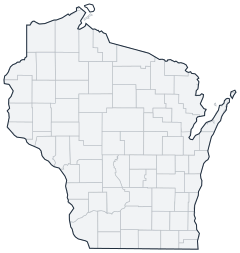

Historical county changes, 1790–1990 › Wisconsin

| Name↕ | Unit↕ | Existed↕ | FIPS↕ |
|---|---|---|---|
| Adams County | county | 1850–1990 | 55001 |
| Ashland County | county | 1860–1990 | 55003 |
| Barron County | county | 1860–1990 | 55005 |
| Bayfield County | county | 1850–1990 | 55007 |
| Brown County | county | 1820–1990 | 55009 |
| Buffalo County | county | 1860–1990 | 55011 |
| Burnett County | county | 1860–1990 | 55013 |
| Calumet County | county | 1840–1990 | 55015 |
| Chippewa County | county | 1850–1990 | 55017 |
| Clark County | county | 1860–1990 | 55019 |
| Columbia County | county | 1850–1990 | 55021 |
| Crawford County | county | 1820–1990 | 55023 |
| Dane County | county | 1840–1990 | 55025 |
| Dodge County | county | 1840–1990 | 55027 |
| Door County | county | 1860–1990 | 55029 |
| Douglas County | county | 1860–1990 | 55031 |
| Dunn County | county | 1860–1990 | 55033 |
| Eau Claire County | county | 1860–1990 | 55035 |
| Florence County | county | 1890–1990 | 55037 |
| Fond du Lac County | county | 1840–1990 | 55039 |
| Forest County | county | 1890–1990 | 55041 |
| Grant County | county | 1840–1990 | 55043 |
| Green County | county | 1840–1990 | 55045 |
| Green Lake County | county | 1860–1990 | 55047 |
| Iowa County | county | 1830–1990 | 55049 |
| Iron County | county | 1900–1990 | 55051 |
| Jackson County | county | 1860–1990 | 55053 |
| Jefferson County | county | 1840–1990 | 55055 |
| Juneau County | county | 1860–1990 | 55057 |
| Kenosha County | county | 1850–1990 | 55059 |
| Kewaunee County | county | 1860–1990 | 55061 |
| La Crosse County | county | 1860–1990 | 55063 |
| Lafayette County | county | 1850–1990 | 55065 |
| Langlade County | county | 1880–1990 | 55067 |
| Lincoln County | county | 1880–1990 | 55069 |
| Manitowoc County | county | 1840–1990 | 55071 |
| Marathon County | county | 1850–1990 | 55073 |
| Marinette County | county | 1880–1990 | 55075 |
| Marquette County | county | 1840–1990 | 55077 |
| Menominee County | county | 1970–1990 | 55078 |
| Milwaukee County | county | 1840–1990 | 55079 |
| Monroe County | county | 1860–1990 | 55081 |
| Oconto County | county | 1860–1990 | 55083 |
| Oneida County | county | 1890–1990 | 55085 |
| Outagamie County | county | 1860–1990 | 55087 |
| Ozaukee County | county | 1860–1990 | 55089 |
| Pepin County | county | 1860–1990 | 55091 |
| Pierce County | county | 1860–1990 | 55093 |
| Polk County | county | 1860–1990 | 55095 |
| Portage County | county | 1840–1990 | 55097 |
| Price County | county | 1880–1990 | 55099 |
| Racine County | county | 1840–1990 | 55101 |
| Richland County | county | 1850–1990 | 55103 |
| Rock County | county | 1840–1990 | 55105 |
| Rusk County | county | 1910–1990 | 55107 |
| Sauk County | county | 1840–1990 | 55111 |
| Sawyer County | county | 1890–1990 | 55113 |
| Shawano County | county | 1860–1990 | 55115 |
| Sheboygan County | county | 1840–1990 | 55117 |
| St. Croix County | county | 1840–1990 | 55109 |
| Taylor County | county | 1880–1990 | 55119 |
| Trempealeau County | county | 1860–1990 | 55121 |
| Vernon County | county | 1860–1990 | 55123 |
| Vilas County | county | 1900–1990 | 55125 |
| Walworth County | county | 1840–1990 | 55127 |
| Washburn County | county | 1890–1990 | 55129 |
| Washington County | county | 1840–1990 | 55131 |
| Waukesha County | county | 1850–1990 | 55133 |
| Waupaca County | county | 1860–1990 | 55135 |
| Waushara County | county | 1860–1990 | 55137 |
| Winnebago County | county | 1840–1990 | 55139 |
| Wood County | county | 1860–1990 | 55141 |
Note: Decimals in FIPS codes come from Forstall, who gives every county a code, including counties that no longer exist. A county abolished between 1930 and 1990 keeps the code it had. However, a county which was abolished prior to 1930 never received a code. Such a county is given the code of the county which precedes it alphabetically plus a decimal to hold its place in the list.
Source: Richard L. Forstall (1996), Population of States and Counties of the United States: 1790 to 1990, U.S. Bureau of the Census (public domain). Always check a row against the scan it links to.